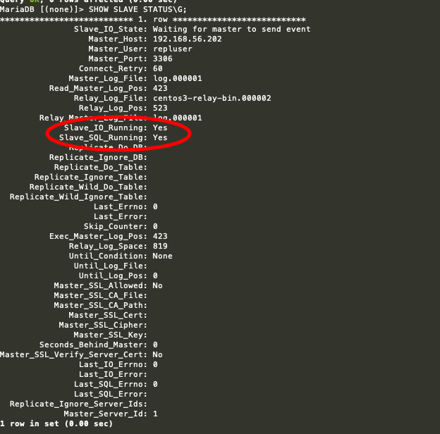

本机环境
centos7 ip: 192.168.56.202 主节点
ip: 192.168.56.203 从节点安装
MariaDB- 检查
MariaDB或mysql以前是否安装如果安装则卸载- 检查
MariaDBrpm -qa | grep MariaDB - 卸载
MariaDBrpm -e --nodeps MariaDB-* - 检查
mysqlrpm -qa | grep mysql - 卸载
mysqlyum remove mysql mysql-server mysql-libs compat-mysql51
- 检查
- 安装
MariaDByum -y install mariadb mariadb-server - 启动
MariaDBsystemctl start mariadb - 设置开机启动
MariaDBsystemctl enable mariadb - 配置
MariaDBmysql_secure_installation
首先是设置密码，会提示先输入密码 Enter current password for root (enter for none):<–初次运行直接回车
设置密码
Set root password? [Y/n] <– 是否设置root用户密码，输入y并回车或直接回车
New password: <– 设置root用户的密码
Re-enter new password: <– 再输入一次你设置的密码
其他配置
Remove anonymous users? [Y/n] <– 是否删除匿名用户，回车
Disallow root login remotely? [Y/n] <–是否禁止root远程登录,回车,
Remove test database and access to it? [Y/n] <– 是否删除test数据库，回车
Reload privilege tables now? [Y/n] <– 是否重新加载权限表，回车
(以上操作也可以根据自己需要配置)- 登入
MariaDBmysql -uroot -p密码 - 两台机器做相同配置
- 检查
关闭两台机器防火墙
关闭防火墙 systemctl stop firewalld.service
禁止开机启动
systemctl disable firewalld.service配置主从
对
主节点配置- 修改配置文件
进入配置文件
vi /etc/my.cnf修改配置文件在
[mysqld]中添加server_id=1 #设置当前服务器的ID号 log_bin=/var/lib/mysql/log #启动二进制日志并指定文件名
skip_name_resolve=on #跳过主机名解析。在CentOS 6自带的mysql后面的=on不用写
innodb_file_per_table=on #innodb的每个表是用单独的文件- 重启
MariaDBsystemctl restart mariadb - 进入
MariaDBmysql -uroot -p密码 - 配置一个用户用于操作主从复制
格式: GRANT REPLICATION SLAVE,REPLICATION CLIENT ON *.* TO '账号'@'从节点ip' IDENTIFIED BY '密码'; 如: GRANT REPLICATION SLAVE,REPLICATION CLIENT ON *.* TO 'repluser'@'192.168.56.%' IDENTIFIED BY 'repluser';- 展示一下
master信息下面要用
SHOW MASTER STATUS; +------------+----------+--------------+------------------+
| File | Position | Binlog_Do_DB | Binlog_Ignore_DB |
+------------+----------+--------------+------------------+
| log.000001 | 423 | | |
+------------+----------+--------------+------------------+- 修改配置文件
对
从节点配置- 和
主机第一步相同修改server_id=2(只要和上面不同就可以) - 重启
MariaDBsystemctl restart mariadb - 进入
MariaDBmysql -uroot -p密码 - 可选设置
FLUSH TABLES WITH READ LOCK; 添加全局读锁- 启动服务
CHANGE MASTER TO MASTER_HOST='192.168.56.202',MASTER_USER='主机账号',MASTER_PASSWORD='主机密码',MASTER_LOG_FILE='主机查询的 File 值',MASTER_LOG_POS=主机查询的 Position 值; 如: CHANGE MASTER TO MASTER_HOST='192.168.56.202',MASTER_USER='repluser',MASTER_PASSWORD='repluser',MASTER_LOG_FILE='log.000001',MASTER_LOG_POS=423;- 启动
SLAVE线程START SLAVE; 查看从服务器的状态
SHOW SLAVE STATUS\G
从服务器配置失败
错误信息：Could not find target log during relay log initialization 可以重新配置：（在MariaDB命令行执行） reset slave- 和
授权远程连接 （初始化也可以开启）
GRANT ALL PRIVILEGES ON *.* TO 'root'@'%'IDENTIFIED BY '密码' WITH GRANT OPTION;现在可以在
主节点中新建数据库尝试了